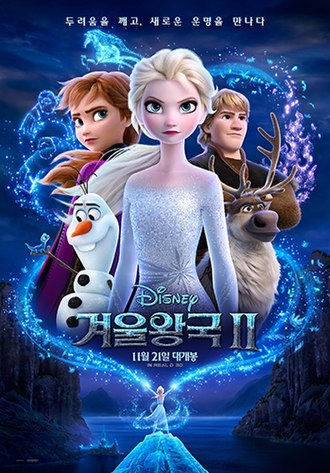

좋아하는 영화

겨울왕국2
줄거리:
엘사와 안나의 모험
평점:
★★★★
한줄평:
주체적인 두 여성의 자아찾기
크루엘라
줄거리:
101마리 달마시안의 빌런 크루엘라의 이야기
평점:
★★★★
한줄평:
유쾌한 광기
알라딘
줄거리:
천일야화의 알라딘과 마법의 램프 이야기를 원작으로 하며, 1992년 동명 애니메이션 영화를 실사화한 작품이다.
평점:★★★★
한줄평:
우울했던 삶에 활력을 되찾아준 영화
더 많은 영화를 보고싶다면
넷플릭스
에 가입해보세요!